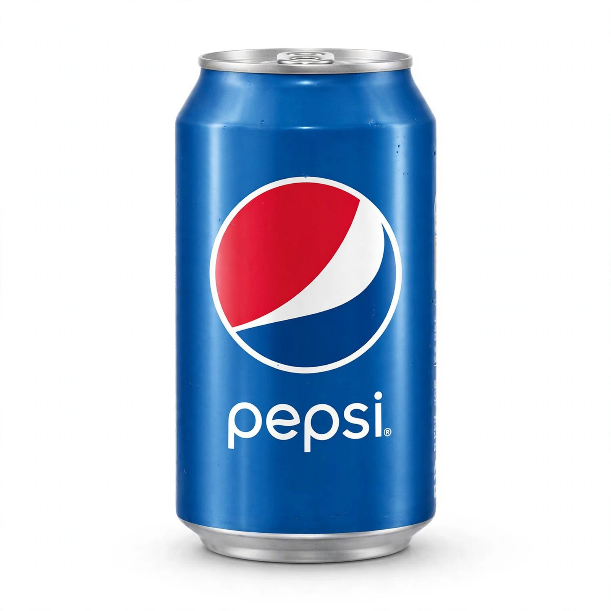

Pepsi
From Wikipedia, the free encyclopedia
| Pepsi | |
 | |
| Type | Cola |
|---|---|
| Manufacturer | PepsiCo |
| Origin | United States |
| Introduced | 1893 (as Brad's Drink); 1898 as Pepsi-Cola |
| Related products | Coca-Cola, Diet Pepsi, Pepsi Max |
Pepsi is a carbonated soft drink manufactured by PepsiCo. Created and developed in 1893 by pharmacist Caleb Bradham in New Bern, North Carolina, it was originally sold as "Brad's Drink" at his drugstore soda fountain. It was renamed Pepsi-Cola in 1898 — "Pepsi" from dyspepsia, reflecting Bradham's claim that it aided digestion, and "Cola" from the kola nut.
History
The Pepsi-Cola Company was incorporated in 1902, but the business went bankrupt in the 1920s after Bradham gambled on sugar prices. Candy magnate Charles Guth acquired the brand and reformulated the drink; during the Great Depression Pepsi doubled the bottle size to 12 ounces while keeping the five-cent price, a strategy captured in the jingle "Nickel, Nickel" and one that greatly expanded sales.
Pepsi became the perennial challenger to Coca-Cola, a rivalry dubbed the "cola wars." The 1975 "Pepsi Challenge" blind taste tests, the "Pepsi Generation" campaign, and endorsements by stars such as Michael Jackson and Beyoncé defined its youthful marketing identity. In 2023 Pepsi introduced a refreshed logo, restoring a bold globe design reminiscent of its 1970s–1990s look.
Variants
Major variants include Diet Pepsi (1964), Pepsi Max, Pepsi Zero Sugar, and flavoured lines such as Pepsi Wild Cherry. Caffeine-free and real-sugar versions have been sold in various markets.
See also: Frito-Lay, Indra Nooyi, Coca-Cola